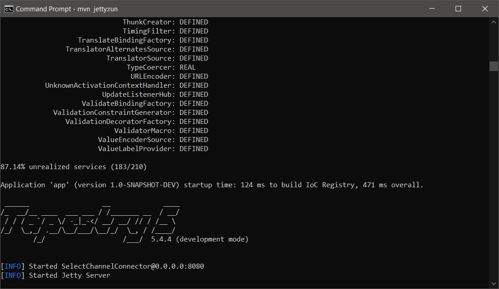

tl;dr
Die Getting-Started Guidelines sind nicht mehr aktuell als auch andere Quellen veraltet sind. Diesmal nicht durch Stackoverflow sondern dank Andreas Ernst von der offiziellen Mailing Liste konnte ich eine Lösung finden.

Hintergrund
Apache Tapestry ist ein “ur”-altes Web Framework welches ich im Jahre 2012 zum ersten – und letzten Mal einsetzte. Da es mir damals leicht für den Einstieg vorkam wollte ich es nun einmal wieder ausgraben.
Ausgangslage
Ich konnte weder mit dem offiziellen Getting-Started Guide noch mit dem verlinkten Beispiel zu “Hotel Booking” Tapestry via Maven nicht zum bauen beziehungsweise ausführen bringen.
Lokale Versionen
$ mvn --version
Apache Maven 3.6.0 (97c98ec64a1fdfee7767ce5ffb20918da4f719f3; 2018-10-24T20:41:47+02:00)
Maven home: C:\ProgramData\chocolatey\lib\maven\apache-maven-3.6.0\bin\..
Java version: 1.8.0_191, vendor: Oracle Corporation, runtime: C:\Program Files\Java\jdk1.8.0_191\jre
Default locale: en_US, platform encoding: Cp1252
OS name: "windows 10", version: "10.0", arch: "amd64", family: "windows"
Getting started"-Fehler
[ERROR] Failed to execute goal org.apache.maven.plugins:maven-archetype-plugin:3.0.1:generate (default-cli) on project standalone-pom:
org .apache.maven.archetype.exception.ArchetypeGenerationFailure: Error merging velocity templates:
Lexical error, Encountered: "\ufffd" (65533), after : "" at
archetype-resources/src/main/webapp/mybootstrap/fonts/glyphicons-halflings-regular.eot[line 16, column 21] -> [Help 1]
Hotel booking"-Fehler
[ERROR] /C:/Users/tobia/IdeaProjects/tapestry5-hotel-booking/src/main/java/com/tap5/hotelbooking/services/BasicAuthenticator.java:[87,13] try-with-resources is not supported in -source 1.5
Lösung
Nach etlichen hin und her so wie dem asuprobieren verschiedener, offizieller Beispielprojekten wurde ich auf der Mailing Liste auf den korrekten Maven Befehl hingewiesen. Mit diesem funktionierte es so gescheimdig wie vor fast 10 Jahren.
Funktioniernde Terminal Befehle:
Batch mode (nicht interaktiv):
mvn org.apache.maven.plugins:maven-archetype-plugin:2.4:generate \
-DarchetypeGroupId=org.apache.tapestry \
-DarchetypeArtifactId=quickstart \
-DarchetypeVersion=5.4.4 \
-DarchetypeRepository=local \
-DgroupId={…} \
-DartifactId={…} \
-Dversion={…}} \
-Dpackage={…} \
-Darchetype.interactive=false \
--batch-mode
Interaktiv:
mvn org.apache.maven.plugins:maven-archetype-plugin:2.4:generate \
-DarchetypeGroupId=org.apache.tapestry \
-DarchetypeArtifactId=quickstart \
-DarchetypeVersion=5.4.4 \
-DarchetypeRepository=local
Man sollte nicht vergessen
Natürlich muss man hier erwähnen, dass das Projekt auf Bootstrap 3 setzt und auch sonst, wirklich nicht mehr hip ist – dafür fühlt man sich “daheim”.